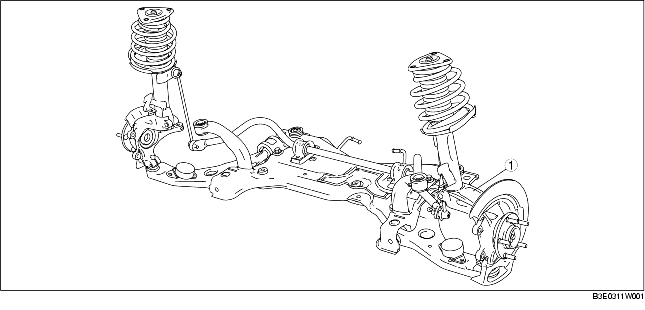

INDEX D'EMPLACEMENT D'ESSIEU AVANT
B3E031104000W01

.
1
Moyeu de roue, porte-fusée de direction
(voir la section
INSPECTION DE MOYEU DE ROUE, FUSÉE DE DIRECTION
.)
(voir la section
DEPOSE/REPOSE DE MOYEU DE ROUE, PORTE-FUSEE DE DIRECTION
.)